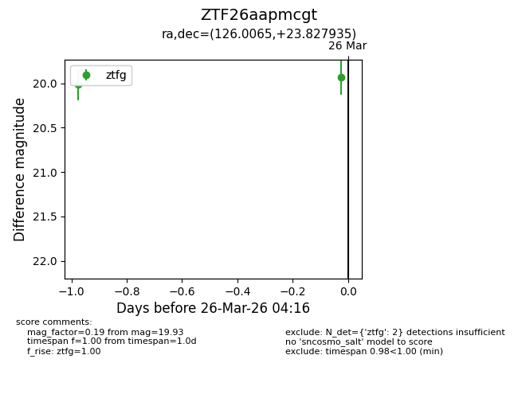
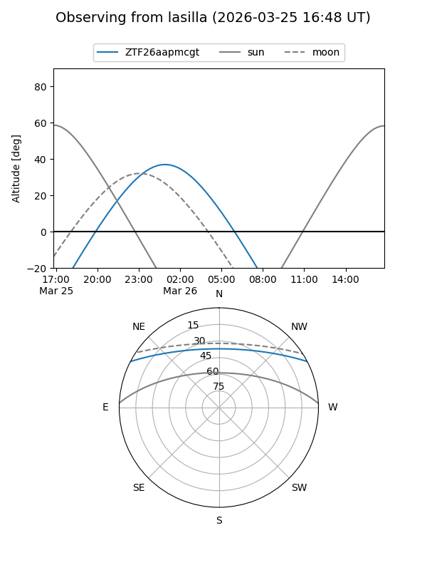
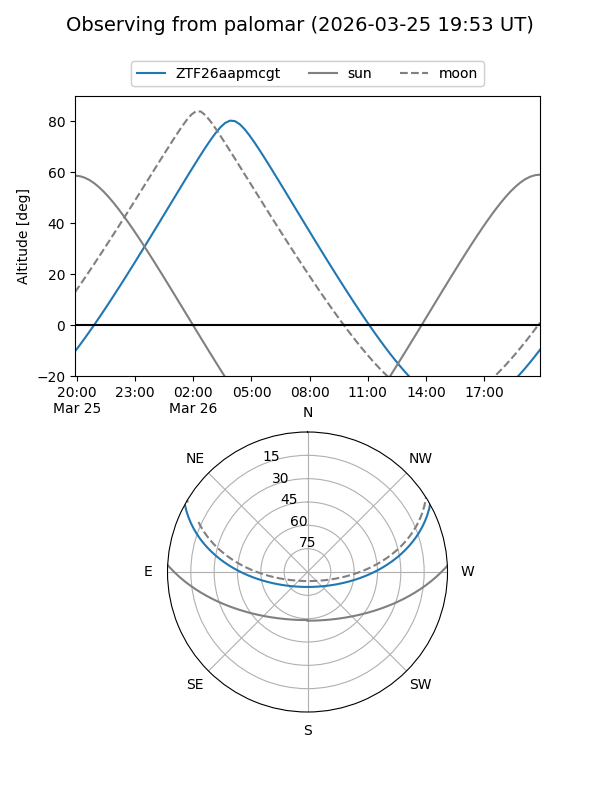
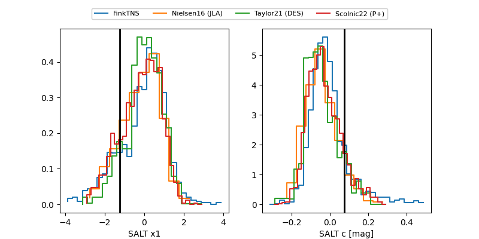

ZTF26aapmcgt
Target ZTF26aapmcgt at 2026-03-26 04:19
Aliases and brokers:
FINK: link
Lasair: link
ALeRCE: link
alt names
ZTF26aapmcgt (ztf,fink_ztf)
Coordinates:
equatorial (ra, dec) = 126.0065,+23.82793
equatorial (HMS+DMS) = 08:24:01.56,+23:49:40.56
galactic (l, b) = (199.8418,+30.28095)
Flags:
Photometry:
last ztfg=19.93
2 ztfg detections
Lightcurve

Visibility


Additional plots
